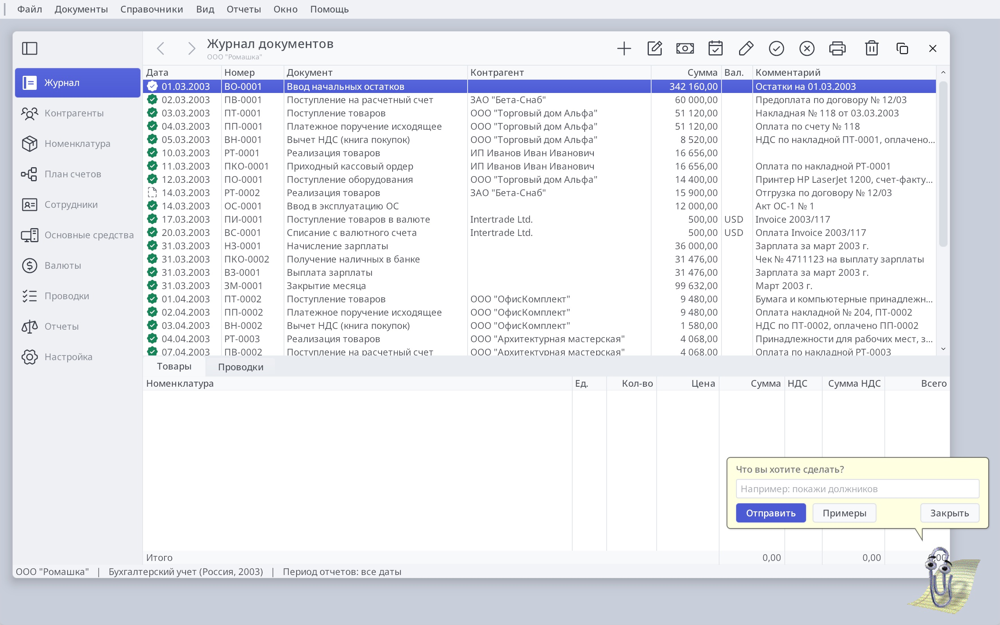
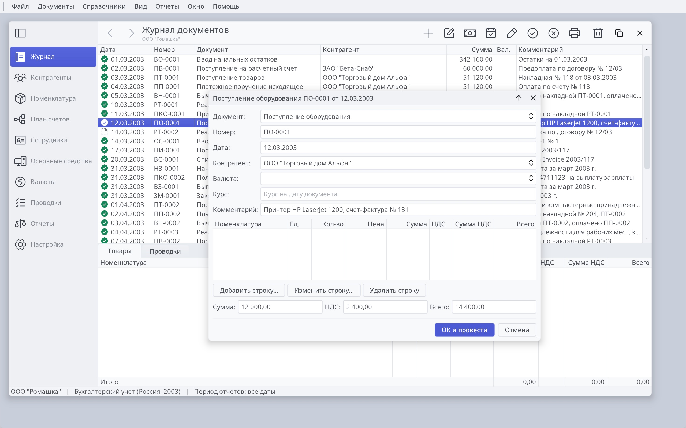
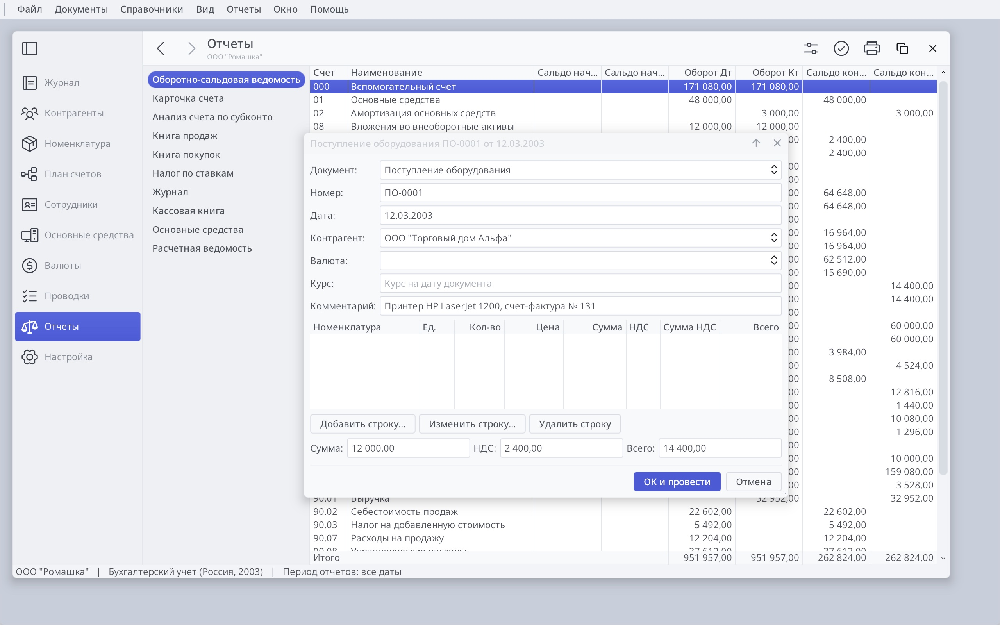
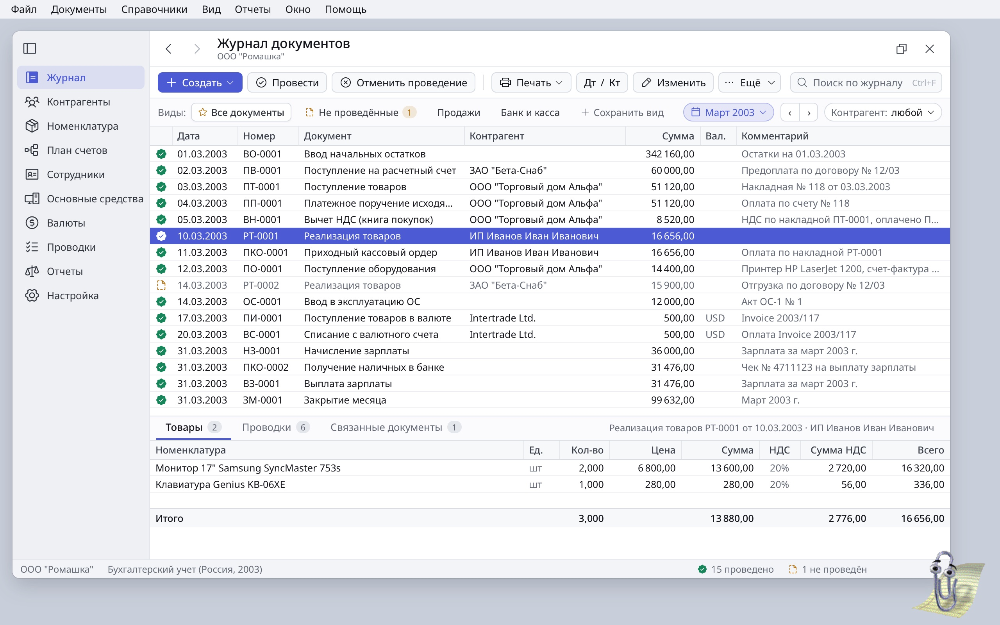
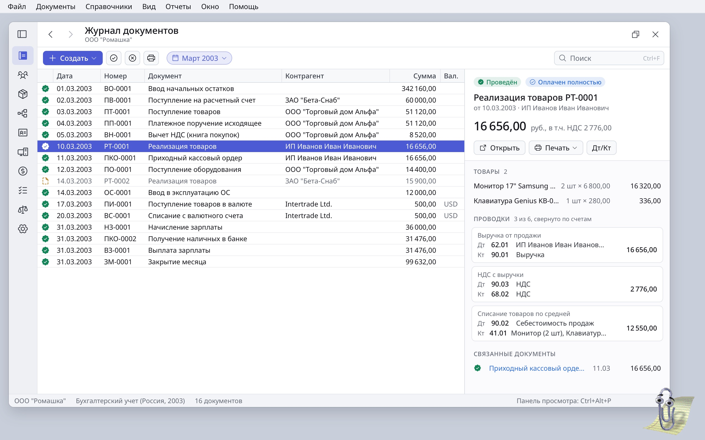
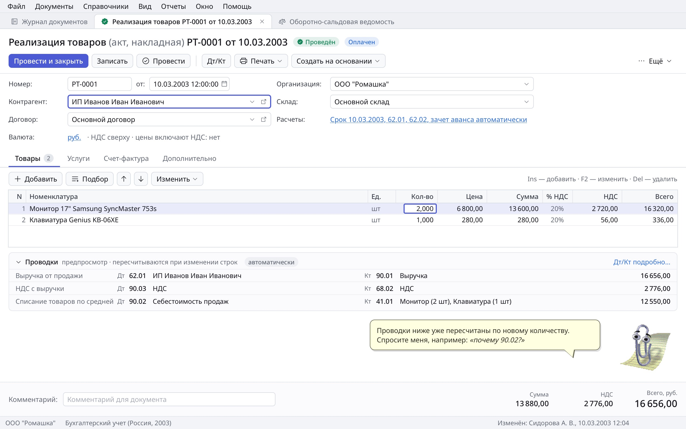
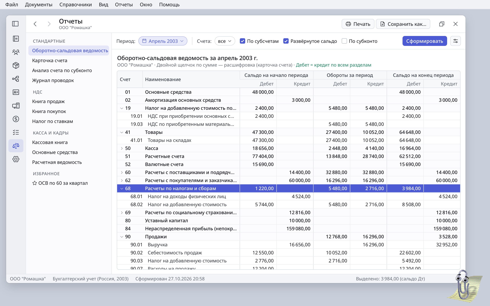
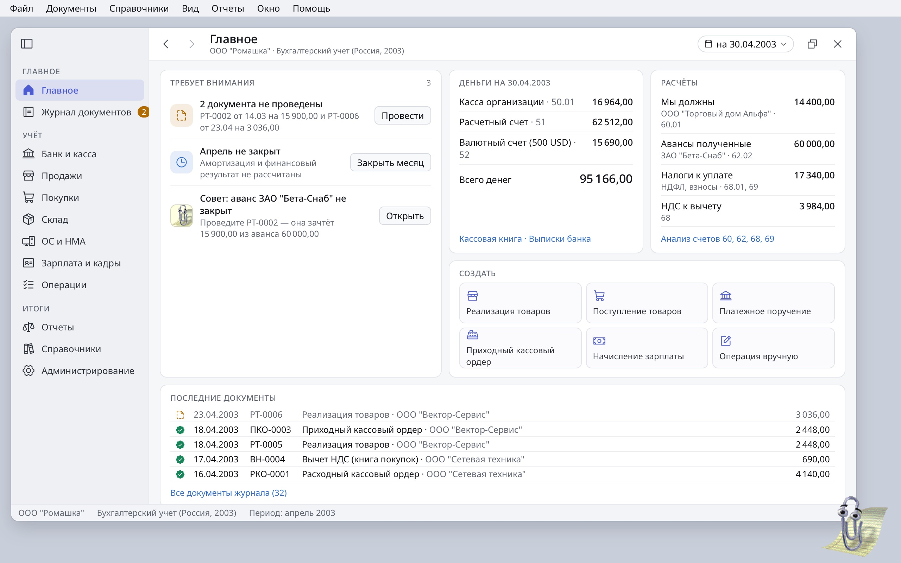
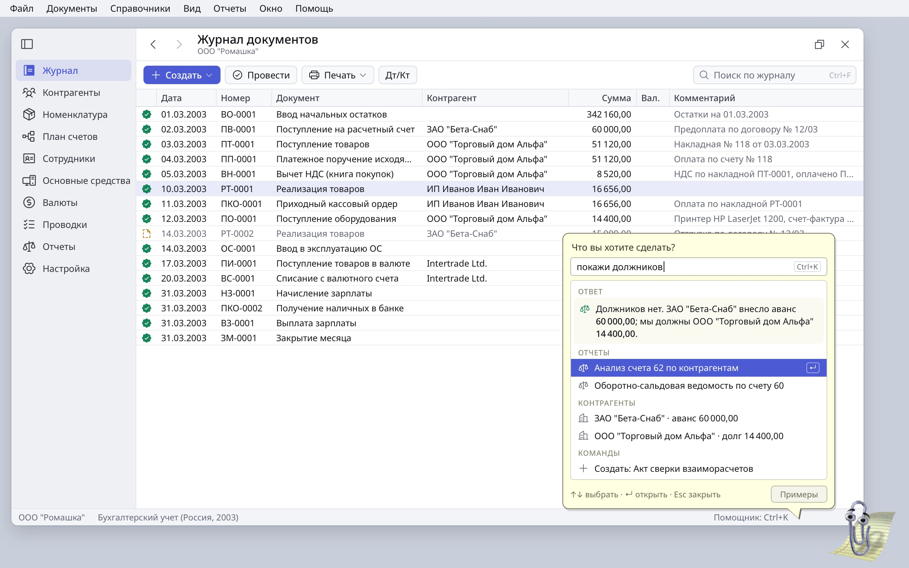

Ledger: six redesign concepts
The goal: keep the 1C grammar that accountants rely on (journal, Провести, Дт/Кт, № … от …, Сформировать), but make the app easier to read, easier to learn, and quicker to use from the keyboard. Every concept keeps Porcelain, Phosphor icons and Clippy.
Where Ledger is today



Labelled command bar and saved views

What changes
- The command bar uses 1C's order: Создать ▾ as the only filled button, then Провести, Отменить проведение, Печать ▾, Дт/Кт, Изменить and Ещё ▾. Search sits on the right.
- A views row adds Все документы, Не проведённые (1), Продажи, Банк и касса and + Сохранить вид.
- A period chip with ‹ › steps month by month, plus a counterparty filter.
- The sidebar selection becomes a tint, so the solid indigo is left for the selected row and the primary button.
- The status bar counts posted and unposted documents with icon and text, so status never relies on colour alone.
Why
- Recognition beats recall. Taxi-era 1C users already know these words, and a caption removes the guessing between two pencils.
- Accountants re-run the same slices of the journal. Fiori variant management, Business Central saved views and Odoo favourites all save filters, sort and columns together. In 1C this is buried under Ещё → Настроить список.
- Carbon recommends at most about five visible table actions, with the rest under overflow.
Sources: SAP Fiori, Microsoft Business Central, Odoo, IBM Carbon, buhexpert8 (1C lists).
Orion work
- Toolbar items with a caption beside the icon, and split buttons with a menu.
- A reusable filter-bar control with chips and a period stepper, bound to the datasource's filter.
- Saved views stored per user in settings and declared in
.orion.
Preview pane for the selected document

What changes
- On wide screens a right-hand pane replaces the bottom tabs. It always shows something useful, even for documents with no lines.
- Postings are grouped by account pair, each with a plain caption: Выручка от продажи, НДС с выручки, Списание товаров.
- Related documents show payment state: "Оплачен полностью" comes from ПКО-0001.
- The pane toggles with a key, and the bottom pane remains an option.
Why
- Business Central's FactBox (Alt+F2) and the preview pane in Mail or Finder let people check a record without opening it.
- It brings 1C's Дт/Кт and Структура подчинённости into one glance, which helps people learn the chart of accounts.
- The trade-off is width. The Comment column moves into the pane, so this works best as a View setting rather than the default.
Sources: Business Central personalization, Visma eAccounting journal, 1C practice.
Orion work
- An inspector panel in the split view, with a collapsed state remembered per user.
- A posting-summary query that groups by Dt/Kt pair (data layer).
- A Card-based template that repeats over postings.
The document form in 1C grammar, with live postings

What changes
- The title reads "Реализация товаров РТ-0001 от 10.03.2003", followed by Проведён and Оплачен badges.
- Провести и закрыть is the primary button, followed by Записать, Провести, Дт/Кт, Печать ▾, Создать на основании ▾ and Ещё.
- The header is a two-column grid with Номер and от on one line. Settings that rarely change (currency, settlement terms) become hyperlinks, as in 1C 8.3.
- Line commands (Добавить, Подбор, ↑ ↓) sit above the grid, and cells edit in place.
- Totals are read-only figures at the bottom right, with Всего emphasised. The comment sits at the bottom left, where 1C puts it.
Why
- This is the exact layout 1C users know. Nothing moves away from them, while the form becomes more compact and easier to scan.
- A live postings preview (freee's 仕訳プレビュー) shows errors before posting. In 1C the postings appear only after posting.
- Business Central keeps one clear commit action and save-and-close on the keyboard. Xero users complain when the default button has side effects.
- Clippy now sits above the totals instead of covering them.
Sources: Infostart and buhexpert8 (1C forms), freee support, Business Central shortcuts, Xero product ideas.
Orion work
- A form command bar that the
.orionform declares, with a default action and Ctrl+Enter. - A posting preview: run the configuration's rules on the unsaved editing context, without writing anything.
- Status badges on the title row, and a hyperlink-style field control.
Reports: parameters, Сформировать and a real tree

What changes
- The parameters sit on the report itself: period chip, accounts, По субсчетам, Развёрнутое сальдо, then a primary Сформировать.
- Two-row headers (Сальдо на начало, Обороты, Сальдо на конец, each over Дебет and Кредит) end the truncation.
- Accounts form a collapsible tree: parent rows are medium weight and sub-accounts are indented. Zeros stay blank.
- The report list is grouped (Стандартные, НДС, Касса и кадры) and gains Избранное for saved settings.
- The status bar sums the selection.
Why
- "Set parameters, then Сформировать" is how 1C reports work, and Fiori's manual filter bar follows the same model.
- Fiori recommends a tree table for hierarchies and grouped headers for paired measures.
- Drill-down on Enter or double-click follows 1C's Расшифровка and Tally's drill path from amount to voucher.
- Collapsing the sidebar to its rail gives the six money columns room.
Sources: ppt.ru (1C ОСВ), SAP Fiori filter bar, tree table and ALV, TallyPrime reports.
Orion work
- TableView or ReportView: grouped column headers and tree rows with expand and collapse. Check
reportview.cfirst. - A parameter-bar form per report in
.orion, with an "out of date" state after the parameters change. - A sum of the selected cells in the status bar.
Главное: a start page and 1C sections

What changes
- The sidebar is regrouped into 1C:Бухгалтерия's own sections: Банк и касса, Продажи, Покупки, Склад, ОС и НМА, Зарплата и кадры, Операции, Отчеты, Справочники, Администрирование.
- The start page has five cards: Требует внимания (drafts, month not closed, advance not offset), Деньги, Расчёты, Создать and Последние документы.
- A badge on Журнал counts unposted documents.
Why
- The current sidebar mixes catalogs and journals. 1C users navigate by business area, so this is more familiar, not less.
- 1C's Начальная страница and Business Central's Role Center cues, which open filtered lists, are the proven pattern. Xero users ask for drafts on the home page.
- Putting Clippy's suggestion in the list keeps the character without interrupting the user, which was the original complaint about Clippy.
Sources: 1C ITS (Taxi main window), Business Central Role Centers and cues, Xero product ideas.
Orion work
- ActivityBar group headers and count badges.
- A Card or TileGrid dashboard form bound to small datasource queries (balances, drafts, period state).
- An assistant hook that posts suggestions into a list instead of the speech bubble.
Clippy as the command search

What changes
- The balloon becomes the go-to box. A direct answer comes first, followed by matching reports, records and commands.
- Keyboard only: ↑↓, ↵ and Esc, with a shortcut hint in the status bar.
- The answer here is real: there are no debtors; ЗАО "Бета-Снаб" paid a 60 000,00 advance; Ledger owes ООО "Торговый дом Альфа" 14 400,00.
Why
- Business Central's Tell Me (Alt+Q), Tally's Go To (Alt+G) and 1C 8.5's global search all show that one box beats menus for people who already know what they want.
- Clippy already parses requests like покажи должников. Turning the balloon into a palette makes him the fastest route through the app, not a decoration.
Sources: Business Central shortcuts, TallyPrime keyboard-first design, buhexpert8 (1C 8.5).
Orion work
- Grouped result rows and keyboard selection inside the speech bubble.
- A command index built from menus, reports and datasource records.
- A global accelerator that focuses the assistant.
Suggested order
- Concept 3, the document form. Accountants spend most of their time in this screen, it gains the most, and it has no familiarity risk. The live postings preview is the strongest idea from the research.
- Concept 1, the command bar and views. Captions and a period are cheap to add and remove most of the guessing.
- Concept 4, the reports. Two-row headers and the tree fix visible defects. The tree view also helps the chart of accounts.
- Concepts 5 and 6, home and command search. These build on Clippy and add the most "modern" feel.
- Concept 2, the preview pane. Offer it as a View option after the rest are in place.
References
SAP Fiori: variant management · filter bar · tree table · analytical table
Business Central: saved views · keyboard shortcuts · Role Centers
Odoo: search, filters and favourites
freee: journal preview on entry · Money Forward: journal entry
TallyPrime: working with reports · keyboard-first design
Banana Accounting: Smart Fill · DATEV booking line
1C ITS: Taxi main window · buhexpert8: list settings · ppt.ru: ОСВ in 1C 8.3
Xero product ideas: drafts on the home page
The research found no usable public UI documentation for Kingdee, Yonyou, Kontur, МойСклад, Exact, Pennylane or MYOB, so none of the patterns rely on them.